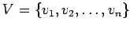

Inhalt Index DeskTop Bronstein

 Algebra und Diskrete Mathematik Algorithmen der Graphentheorie Grundbegriffe und Bezeichnungen
Algebra und Diskrete Mathematik Algorithmen der Graphentheorie Grundbegriffe und Bezeichnungen


Für einen ungerichteten Graphen G=(V,E) mit  und wird die Matrix I vom Typ (n,m) mit
| (5.342) |
Inzidenzmatrix genannt.
Für einen gerichteten Graphen G=(V,E) mit und ist die Inzidenzmatrix I die durch
| (5.343) |
definierte Matrix vom Typ (n,m).